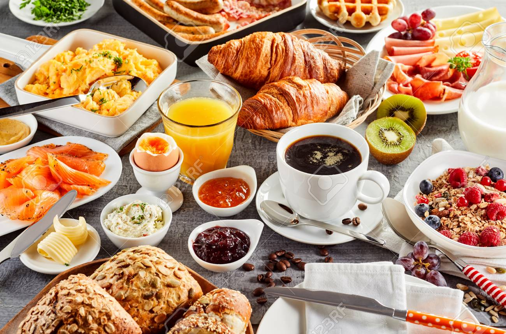

Desayunos saludables
Surtido variado de desayuno que incluye zumos, bollos artesanales, frutas de temporada, panes variados, mermeladas naturales y cafés
Surtido variado de desayuno que incluye zumos, bollos artesanales, frutas de temporada, panes variados, mermeladas naturales y cafés
Surtido de deliciosos embutidos delicatessen en tabla de madera
La leche en mesa de madera con las vacas en el fondo
Estilo tradicional de las tazas de queso artesanales